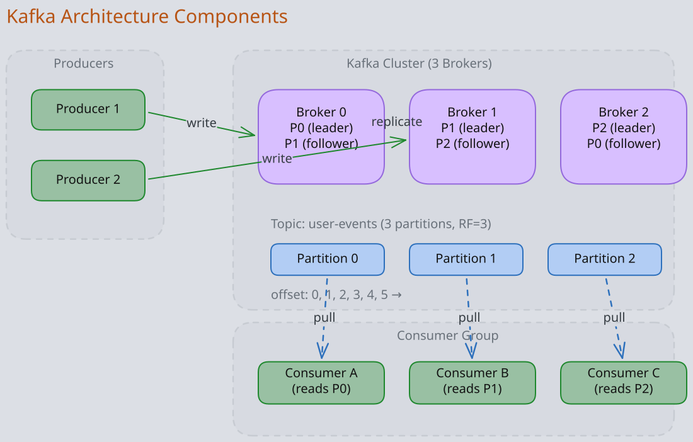
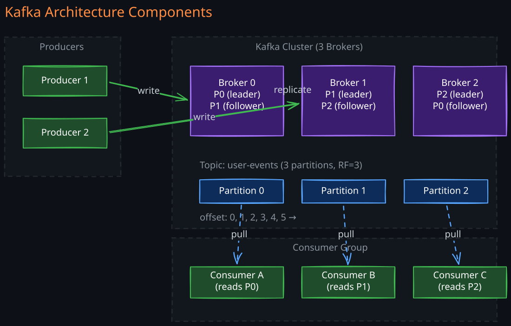

The Story
Before Kafka, LinkedIn had seven different bespoke data pipelines connecting various internal systems — each with different bugs, different delivery guarantees, and different teams maintaining them. Jay Kreps didn’t set out to build a messaging system. He built a commit log and realized that if you expose the database’s internal write-ahead log as a first-class architectural component, you can derive everything else from it. The reframing — “the log is the architecture” — was the actual innovation, not the software. He named it after Franz Kafka because “it is a system optimized for writing.” By 2019, LinkedIn’s Kafka cluster was processing 7 trillion messages per day.
Apache Kafka is a distributed event streaming platform built around a single powerful abstraction: the append-only commit log. Understanding why this abstraction matters — and how Kafka implements it at scale — is the key to reasoning about Kafka in system design.
Related Topics: 02-Zookeeper, 01-Big-Data-Stream-Processing, 05-Distributed-Transactions, 03-Consensus-Algorithm
1. The Distributed Log Abstraction
The core problem Kafka solves is this: in a distributed system with dozens of services, how do you reliably move data between producers and consumers with ordering guarantees, durability, and replay capability?
Traditional message brokers (like RabbitMQ) model this as a queue: messages arrive, get delivered to a consumer, and are deleted. This works for task distribution, but it breaks down when you need multiple consumers to independently process the same stream of events, or when you need to replay history.
Kafka’s insight is that an append-only log is a better primitive for event streaming than a queue. A log is an ordered, immutable sequence of records. Producers append to the end. Consumers read from any position by maintaining their own offset. The log is retained for a configurable duration — messages are not deleted after consumption.
This changes the relationship between producers and consumers fundamentally:
- Consumers are decoupled from production rate — they read at their own pace
- Multiple consumers read the same log independently — no message duplication needed
- Replay is trivial — reset the consumer offset to any position
- The log is the source of truth — it captures the complete history of events
Every design decision in Kafka flows from this commitment to the log abstraction.
2. Core Messaging Models
1. Queue Model (Point-to-Point)
Messages placed in a queue, where each message is consumed by exactly one consumer. Good for load balancing work across workers.
2. Publisher-Subscriber Model
Messages published to topics, where every subscriber receives a copy. Good for broadcasting the same event to multiple services.
Kafka unifies both patterns. A single consumer group reading a topic behaves like a queue (each message goes to one consumer). Multiple consumer groups reading the same topic behave like pub-sub (each group gets all messages). This dual capability from a single mechanism is what makes Kafka so versatile.
3. Kafka Architecture Components


1. Broker
A single Kafka server instance that stores topic partitions and handles read/write requests. Each broker is the leader for some partitions and a follower for others. A typical production cluster starts with 3-5 brokers and scales horizontally as throughput demands grow.
2. Topic
A logical channel for a stream of related events (e.g., “user-clicks”, “payment-events”, “system-logs”). Topics are divided into partitions for parallelism.
3. Partition
An ordered, immutable, append-only log of records. Each record within a partition has a unique sequential offset. Partitions are the unit of parallelism — the fundamental lever for scaling both production and consumption.
4. Segment Files and Storage Engine
Each partition is stored on disk as a series of segment files. A segment is a pair of files:
- Log segment (
.log): the actual message data, written sequentially - Index file (
.index): a sparse index mapping offsets to byte positions in the log segment
When a segment reaches a configured size (default 1 GB) or age, Kafka rolls to a new active segment. Only the active segment accepts writes; older segments are immutable. This design enables efficient sequential writes (append-only to one file) and fast lookups (binary search in the sparse index, then sequential scan).
Why sequential I/O matters: Kafka’s throughput comes from writing to disk sequentially rather than randomly. Sequential writes on modern disks achieve 600+ MB/s, approaching memory speed. Combined with the OS page cache and zero-copy transfers (sendfile syscall), Kafka avoids copying data between kernel and user space, achieving millions of messages per second.
5. Log Compaction Strategies
Kafka supports two retention strategies:
Delete retention (default): Segments older than the retention period (or exceeding size limits) are deleted. Simple and predictable. Used for event streams where history beyond the retention window is not needed.
Compact retention: Kafka retains the latest value for each key, discarding older records with the same key. A background compaction thread reads old segments, keeps only the most recent record per key, and writes a new compacted segment. This is essential for changelog topics where you need the current state of every key (e.g., a user profile topic where you always want the latest profile).
You can combine both strategies (cleanup.policy=compact,delete) — compact first, then delete segments beyond the retention period.
4. Topic Partitioning
Partitioning is Kafka’s primary scalability mechanism. Understanding how to reason about partition count, key selection, and the parallelism implications is critical for system design.
1. Partition Key Routing
When a producer sends a message, it determines the target partition by:
- Explicit partition — the producer specifies the partition number directly
- Key-based hashing —
hash(key) % num_partitionsroutes messages with the same key to the same partition, preserving per-key ordering - Round-robin — when no key is provided, messages are distributed evenly across partitions (with sticky partitioning in newer clients for better batching)
Key design decision: choosing the right partition key is one of the most important decisions in a Kafka-based architecture. The key determines ordering guarantees and load distribution. A poor choice (e.g., a key with extreme skew like country_code) creates hot partitions that limit throughput.
2. Why Partitioning Matters
- Parallelism: maximum consumer parallelism equals the partition count. A topic with 12 partitions allows at most 12 concurrent consumers in a group.
- Scalability: partitions distribute across brokers, spreading storage and network load. No single broker becomes a bottleneck.
- Ordering: messages within a partition are strictly ordered. No global ordering exists across partitions. If you need ordering for a logical entity (user, order, device), use that entity’s ID as the partition key.
3. Partition Count Selection
Choosing the right partition count requires balancing several factors:
- Throughput target: measure single-partition throughput (producer and consumer side), then divide your target throughput by that number. If a single partition sustains 50 MB/s and you need 200 MB/s, you need at least 4 partitions.
- Consumer parallelism: partition count is the upper bound on consumers in a group. Plan for future growth — it is easy to increase partitions but doing so breaks key-based ordering guarantees for existing keys. The reason is the routing formula:
partition = hash(key) % num_partitions. When partitions change from 12 to 24, a key that previously hashed to partition 3 might now hash to partition 15. Existing messages for that key remain on partition 3 while new messages land on partition 15, so a consumer reading partition 15 sees only the new messages and has no way to reconstruct cross-partition ordering. This is why partition count for keyed topics should be set high initially and treated as immutable. - Broker resource overhead: each partition requires memory for index buffers, file handles, and replication threads. Thousands of partitions per broker increase leader election time during failures and ZooKeeper/KRaft metadata overhead.
- End-to-end latency: more partitions mean more replication traffic and potentially higher commit latency with
acks=all.
A common starting point is 2-3x the expected number of consumers, with a replication factor of 3.
5. Partition Replication and ISR
Replication exists for fault tolerance and durability — not for read scaling. Only the partition leader handles reads and writes. Followers replicate data to take over if the leader fails.
1. In-Sync Replicas (ISR) Mechanics
The ISR set is the subset of replicas that are “caught up” with the leader within a configurable lag threshold. Understanding ISR dynamics is essential for reasoning about Kafka’s availability and durability guarantees.
A replica stays in the ISR as long as:
- It has fetched messages from the leader within
replica.lag.time.max.ms(default 30 seconds) - It is connected to ZooKeeper/KRaft
A replica falls out of ISR when it cannot keep up — typically due to:
- Slow disk I/O on the follower
- Network congestion between leader and follower
- GC pauses or high CPU load on the follower broker
- The follower broker being temporarily down
When a replica falls out of ISR, the leader removes it from the ISR list and updates the metadata. The replica continues fetching and rejoins ISR once it catches up.
2. min.insync.replicas
This broker/topic configuration sets the minimum number of replicas (including the leader) that must acknowledge a write for it to succeed when acks=all. This is the critical knob for the durability vs. availability tradeoff:
replication.factor=3,min.insync.replicas=2,acks=all: writes succeed as long as 2 of 3 replicas are in sync. Can tolerate 1 broker failure without becoming unavailable. This is the standard production configuration.replication.factor=3,min.insync.replicas=3: maximum durability but any single replica falling behind makes the partition unavailable for writes.replication.factor=3,min.insync.replicas=1: a write is durable on the leader alone. Fast but risks data loss if the leader dies before replication.
The key insight: min.insync.replicas does nothing unless acks=all. With acks=1, the leader acknowledges immediately regardless of ISR size.
3. Unclean Leader Election
If all ISR replicas are unavailable, Kafka faces a choice:
- Wait for an ISR replica to recover (unavailable but no data loss) — the default (
unclean.leader.election.enable=false) - Elect a non-ISR replica as leader (available but may lose data that was not yet replicated)
This is a direct tradeoff between availability and consistency, and the right choice depends on the use case.
6. Producer Internals
Understanding how producers work internally helps reason about throughput, latency, and delivery guarantees.
1. Batching and Compression
The producer does not send each message individually. Messages are accumulated in a per-partition buffer and sent as a batch. Two settings control when a batch is sent:
batch.size(default 16 KB): the producer sends when the batch reaches this sizelinger.ms(default 0): the producer waits this long for more messages to arrive before sending an incomplete batch
Setting linger.ms to 5-10ms significantly improves throughput by allowing batches to fill up, at the cost of a small latency increase. In high-throughput scenarios, the batch fills up before the linger timer expires anyway.
Compression (compression.type: none, gzip, snappy, lz4, zstd) is applied per batch. Snappy and LZ4 offer the best throughput-to-compression ratio. Zstd provides the best compression ratio at higher CPU cost. Compression reduces network bandwidth and disk storage, and since Kafka stores compressed batches as-is, the broker does minimal extra work.
2. Acknowledgment Modes
The acks setting controls durability guarantees:
| acks | Behavior | Durability | Throughput |
|---|---|---|---|
0 | Producer does not wait for any acknowledgment | Messages can be lost (fire-and-forget) | Highest |
1 | Leader acknowledges after writing to its local log | Messages lost if leader dies before replication | High |
all (-1) | Leader waits for all ISR replicas to acknowledge | No data loss as long as ISR >= min.insync.replicas | Lower |
For most production systems, acks=all with min.insync.replicas=2 is the standard choice. The throughput reduction is modest (typically 10-20%) because replication happens in parallel.
3. Idempotent Producer
Network failures can cause the producer to retry, potentially creating duplicate messages. The idempotent producer (enable.idempotence=true, default since Kafka 3.0) solves this by assigning each producer a Producer ID (PID) and each message a sequence number. The broker deduplicates by tracking the latest sequence number per PID per partition. If a retry arrives with a sequence number the broker has already seen, it is silently discarded.
Idempotent producers guarantee exactly-once delivery per partition per producer session. They do not provide cross-partition or cross-session guarantees — that requires the transactional producer.
4. Transactional Producer
For atomic writes across multiple partitions (e.g., writing to both an output topic and the consumer offsets topic in a stream processing application), Kafka provides transactions:
- The producer registers a
transactional.idwith a Transaction Coordinator (a broker) - The producer calls
beginTransaction(), sends messages to multiple partitions, then callscommitTransaction()orabortTransaction() - The Transaction Coordinator writes transaction markers to a special
__transaction_statetopic and to each participating partition - Consumers reading with
isolation.level=read_committedonly see messages from committed transactions
This is the foundation of Kafka’s exactly-once semantics (EOS): idempotent producer (no duplicates within a partition) + transactional producer (atomic writes across partitions) + read_committed consumers (no reads of uncommitted data).
7. Consumer Group Protocol
A consumer group is a set of consumers that collectively read a topic, where each partition is assigned to exactly one consumer within the group. This provides both parallel consumption and fault tolerance.
1. Group Coordinator and Partition Assignment
Each consumer group is managed by a Group Coordinator — a broker responsible for that group (determined by hashing the group ID to a partition of __consumer_offsets). When a consumer joins:
- The consumer sends a
JoinGrouprequest to the coordinator - The coordinator selects one consumer as the group leader
- The leader receives the list of all members and topic partitions
- The leader computes the partition assignment using the configured assignment strategy and sends it back via a
SyncGrouprequest - The coordinator distributes assignments to all members
2. Partition Assignment Strategies
| Strategy | Behavior | Best For |
|---|---|---|
| Range | Assigns contiguous partition ranges per topic to each consumer | Co-partitioned topics (joins across topics with same key) |
| RoundRobin | Distributes partitions across consumers in round-robin fashion across all subscribed topics | Even distribution when consumers subscribe to same topics |
| Sticky | Like RoundRobin but minimizes partition movement during rebalances | Reducing rebalance overhead; preserving consumer-local state |
| CooperativeSticky | Sticky assignment with cooperative (incremental) rebalancing | Production default — minimizes disruption |
3. Rebalancing: Eager vs Cooperative
Eager rebalancing (legacy default): when a rebalance triggers (consumer joins, leaves, or crashes), all consumers in the group stop consuming, revoke all partition assignments, and rejoin the group for a completely fresh assignment. During this “stop-the-world” phase, no messages are processed. For large groups with many partitions, this can cause seconds to minutes of downtime.
Cooperative (incremental) rebalancing: only the partitions that need to move are revoked. The rebalance happens in two phases:
- First rebalance: consumers that need to give up partitions revoke only those specific partitions. All other partitions continue being consumed.
- Second rebalance: the revoked partitions are assigned to their new owners.
This dramatically reduces disruption. A consumer joining the group causes zero interruption to existing consumers — only newly assigned partitions are affected. Cooperative rebalancing is the recommended approach for all production deployments.
4. Consumer Offset Management
Consumers track their position using offsets stored in the internal __consumer_offsets topic. Offset commits can be:
- Auto-committed (
enable.auto.commit=true): offsets committed periodically (default every 5 seconds). Simple but risks duplicate processing (crash between process and commit) or data loss (commit before process). - Manually committed: the application explicitly calls
commitSync()orcommitAsync()after processing. This gives precise control over at-least-once or exactly-once guarantees.
8. Exactly-Once Semantics (EOS)
Exactly-once is one of the hardest problems in distributed systems. Kafka achieves it through the combination of three mechanisms:
- Idempotent producer: eliminates duplicates caused by retries within a single partition and producer session
- Transactional producer: enables atomic writes across multiple partitions, ensuring that either all messages in a transaction are visible or none are
- Consumer
read_committedisolation: consumers skip messages from aborted transactions and only read committed data
EOS is most commonly used in Kafka Streams applications where the pattern is consume-process-produce. The transactional producer atomically commits both the output messages and the consumer offset update, ensuring that the consume and produce are treated as a single atomic operation.
Performance cost: EOS adds latency (transaction commit is a two-phase operation) and reduces throughput (transaction markers consume log space, and the coordinator becomes a bottleneck under high transaction rates). For many use cases, idempotent producers with at-least-once delivery and idempotent consumers is a simpler and more performant alternative.
9. Backpressure and Flow Control
Kafka does not push messages to consumers — consumers pull at their own pace. This pull-based model provides natural backpressure: a slow consumer simply falls behind, and the log retains messages until they are consumed or expire.
However, backpressure can appear in other places:
- Producer-side backpressure: if the producer’s internal buffer fills up (
buffer.memory, default 32 MB), thesend()call blocks (up tomax.block.ms). This signals that the producer is generating messages faster than they can be sent. Solutions: increase buffer size, increase batch size, add more partitions, or reduce production rate. - Consumer lag: the gap between the latest offset in a partition and the consumer’s committed offset. Persistent lag means the consumer cannot keep up with the production rate. Solutions: add more consumers (up to partition count), increase
max.poll.records, optimize processing logic, or add more partitions. - Broker-side pressure: when replication cannot keep up, replicas fall out of ISR. When disk I/O saturates, request latency increases for both producers and consumers. Kafka provides quotas (
quota.producer.default,quota.consumer.default) to limit the bandwidth each client can use, preventing any single client from monopolizing broker resources.
10. ZooKeeper and KRaft
1. ZooKeeper Dependency (Legacy)
Historically, Kafka relied on 02-Zookeeper for:
- Broker registration and liveness detection
- Controller election (the broker that manages partition leadership)
- Topic and partition metadata storage
- ACL and configuration storage
ZooKeeper became the operational bottleneck for large Kafka clusters. It limited the number of partitions (ZK watches scale poorly beyond ~200K partitions), added deployment complexity (a separate distributed system to manage), and created a single point of failure for metadata operations.
2. KRaft Mode (Kafka Raft)
KRaft replaces ZooKeeper with a built-in Raft-based consensus protocol for metadata management. A subset of brokers (typically 3 or 5) act as controllers and form a Raft quorum. One controller is the active controller; the others are standbys.
Key improvements:
- Simplified operations: no separate ZooKeeper cluster to deploy and monitor
- Higher partition limits: KRaft can handle millions of partitions per cluster
- Faster failover: controller failover happens in milliseconds instead of seconds
- Single security model: no need to secure both Kafka and ZooKeeper separately
KRaft has been production-ready since Kafka 3.3 and is the default for new deployments. ZooKeeper support is being removed entirely.
11. Kafka Core APIs
1. Producer API
Applications publish streams of records to topics. The producer handles serialization, partitioning, batching, compression, and retry logic.
2. Consumer API
Applications subscribe to topics and process records. The consumer handles deserialization, offset management, group coordination, and rebalancing.
3. Streams API
A client library for building stream processing applications. Transforms input topics into output topics with operations like filter, map, aggregate, join, and windowing. Streams applications are just Kafka consumers and producers internally — no separate cluster needed. This makes it lightweight compared to Flink or Spark Streaming but limited to Kafka-to-Kafka processing.
4. Connector API (Kafka Connect)
A framework for building reusable connectors that move data between Kafka and external systems. Source connectors pull data in (e.g., CDC from databases), sink connectors push data out (e.g., to S3, Elasticsearch, HDFS). Connectors run in a distributed Connect cluster with automatic task distribution and fault tolerance.
12. Kafka vs RabbitMQ
The comparison between Kafka and RabbitMQ is fundamentally about two different messaging philosophies, and understanding the tradeoffs helps you choose the right tool.
1. Architecture Philosophy
RabbitMQ follows a “smart broker, dumb consumer” model. The broker manages complex routing (exchanges, bindings, routing keys), tracks which messages have been delivered, and deletes messages after acknowledgment. The consumer simply receives messages pushed by the broker.
Kafka follows a “dumb broker, smart consumer” model. The broker stores messages in an append-only log and serves reads at requested offsets. The consumer is responsible for tracking its own position and deciding what to read. The broker’s job is to store data durably and serve it efficiently.
2. Delivery Guarantees
RabbitMQ provides at-most-once (no acks), at-least-once (publisher confirms + consumer acks), and effectively-once (deduplication at the application layer). It does not natively support exactly-once.
Kafka provides at-most-once (acks=0), at-least-once (acks=all + consumer commits after processing), and exactly-once (idempotent + transactional producers + read_committed consumers). Kafka’s EOS is a built-in, first-class feature.
3. Message Ordering
RabbitMQ guarantees ordering per queue but loses ordering when messages are redelivered (nacked and requeued) or when competing consumers process at different speeds.
Kafka guarantees strict ordering per partition with no exceptions — even on retries (with idempotent producers). This makes Kafka far more suitable for event sourcing and systems that require causal ordering.
4. Replay Capability
RabbitMQ deletes messages after acknowledgment. Replaying history requires a separate mechanism (e.g., storing messages in a database).
Kafka retains messages for a configurable period. Any consumer can replay from any offset at any time. This makes Kafka ideal for rebuilding state, reprocessing after bug fixes, or onboarding new downstream services.
5. Detailed Comparison
| Feature | RabbitMQ | Kafka |
|---|---|---|
| Model | Queue, pub-sub, request-reply | Pub-sub with consumer groups |
| Broker role | Routes, tracks, deletes | Stores and serves |
| Message flow | Push to consumer | Consumer pulls |
| Retention | Deleted after ack | Time/size-based retention |
| Replay | Not supported | Full replay from any offset |
| Ordering | Per queue (breaks on redeliver) | Per partition (strict, always) |
| Throughput | 10K-50K msg/s | 100K-1M+ msg/s |
| Latency | Sub-millisecond | Sub-10ms (tunable to ~2ms) |
| Exactly-once | Application-level | Native support |
| Routing | Complex (exchanges, bindings) | Topic + partition key |
| Priority queues | Supported | Not supported |
| Best for | Task queues, RPC, complex routing | Event streaming, data pipelines, replay |
6. When to Choose Each
Choose RabbitMQ when you need complex routing logic, message priorities, request-response patterns, or task distribution with moderate throughput. RabbitMQ excels when messages represent tasks to be completed and deleted, not events to be recorded.
Choose Kafka when you need high throughput, event replay, strict ordering, exactly-once semantics, or when multiple independent consumers need the same data stream. Kafka excels when messages represent events that form a durable history.
They are not competitors — they solve different problems. Many production systems use both: Kafka for the core event backbone and RabbitMQ for task distribution and RPC patterns.
13. Production Tuning Guidelines
1. Cluster Sizing
- Brokers: start with 3 (minimum for replication factor 3). Add brokers when disk, network, or CPU becomes the bottleneck.
- Replication factor: 3 is standard. Use 2 only for non-critical topics where some data loss is acceptable.
- Retention: based on replay needs. 7 days is common for event streams. Use compaction for state topics.
2. Consumer Lag Monitoring
Consumer lag is the most important operational metric. Persistent lag indicates the consumer cannot keep up, and unbounded lag eventually leads to data loss when messages expire past the retention window.
Monitor lag per partition per consumer group. Tools like Kafka’s built-in kafka-consumer-groups.sh, Burrow, or custom JMX exporters expose lag metrics. Alert when lag exceeds a threshold that correlates to your SLO (e.g., if your SLO requires processing within 5 minutes, alert when lag represents more than 3 minutes of data).
3. Key Tuning Parameters
| Parameter | Default | Guidance |
|---|---|---|
num.partitions | 1 | Set to 2-3x expected consumers. Increase is easy, decrease is not. |
replication.factor | 1 | Always 3 in production |
min.insync.replicas | 1 | Set to 2 with acks=all for durability |
linger.ms | 0 | Set to 5-20ms for throughput |
batch.size | 16384 | Increase to 64-256 KB for high-throughput producers |
compression.type | none | Use lz4 or zstd in production |
fetch.min.bytes | 1 | Increase to 1-64 KB to reduce fetch frequency |
max.poll.records | 500 | Tune based on processing time per record |
session.timeout.ms | 45000 | Lower values detect failures faster but risk false positives |
Revision Summary
- Kafka’s core abstraction is the append-only commit log — producers append, consumers read at their own offset, messages are retained. This single design choice enables replay, decoupling, and multiple independent consumers.
- Partitions are the unit of parallelism and ordering. Choose partition keys carefully — they determine ordering guarantees and load distribution. Partition count is the upper bound on consumer parallelism.
- ISR (In-Sync Replicas) determines durability. With
acks=allandmin.insync.replicas=2, Kafka guarantees no data loss as long as at least 2 replicas are alive. Replicas fall out of ISR due to slow I/O, network issues, or GC pauses. - Producer delivery guarantees range from fire-and-forget (
acks=0) to exactly-once (idempotent + transactional + read_committed). Idempotent producers use PID + sequence numbers for per-partition deduplication. - Consumer groups provide parallel consumption with automatic partition assignment. Cooperative rebalancing minimizes disruption compared to eager rebalancing. Assignment strategies (Range, RoundRobin, Sticky) control partition distribution.
- Backpressure is natural in Kafka’s pull model — slow consumers fall behind rather than causing upstream failures. Monitor consumer lag as the primary health indicator.
- KRaft replaces ZooKeeper with built-in Raft consensus, improving scalability (millions of partitions), operational simplicity, and failover speed.
- Kafka vs RabbitMQ: Kafka is a durable log for event streaming; RabbitMQ is a smart broker for task distribution. Kafka provides native exactly-once; RabbitMQ provides complex routing and priorities. They complement each other.
Deep Understanding Questions
-
ISR and availability: If a cluster has
replication.factor=3andmin.insync.replicas=2, and two followers fall out of ISR simultaneously, what happens to writes? What if only one falls out? How does this change ifunclean.leader.election.enable=true? Ans: -
Partition key skew: You choose
customer_idas the partition key, but one customer generates 80% of all traffic. What problems does this cause? How would you solve this without losing per-customer ordering guarantees? Ans: -
Exactly-once cost: A team wants to enable exactly-once semantics for all Kafka topics. What are the performance implications? In what scenarios would you argue against EOS and recommend idempotent consumers instead? Ans:
-
Rebalancing storms: A consumer group with 50 consumers using eager rebalancing experiences cascading rebalances during deployment (rolling restart). Why does this happen? How does cooperative rebalancing solve it, and what edge cases remain? Ans:
-
Consumer lag and retention: Consumer lag has been growing steadily for a consumer group. The retention period is 7 days. What happens when lag exceeds 7 days? How would you design monitoring and alerting to prevent data loss? Ans:
-
Log compaction correctness: A team uses a compacted topic to store the latest state per user. A consumer crashes and restarts from offset 0. Can it reconstruct the correct current state? What if compaction has not yet run? What if tombstone records (null values) are involved? Ans:
-
Transactional producer failure: A transactional producer calls
beginTransaction(), sends messages to 3 partitions, then crashes before callingcommitTransaction(). What happens to the messages already written to those partitions? How does the Transaction Coordinator resolve this? Ans: -
KRaft migration risks: A team is migrating a 200-broker cluster from ZooKeeper to KRaft. What are the key risks during migration? What happens if the KRaft controller quorum loses a majority during the migration? Ans:
-
Partition count tradeoffs: A topic currently has 100 partitions. The team wants to increase to 500 partitions to support more consumers. What are the side effects? Why can Kafka not decrease partition count, and what would you do if you needed fewer partitions? Ans:
-
Broker failure and ISR recovery: A broker hosting leaders for 500 partitions crashes. Describe the sequence of events: leader election, ISR updates, producer retries, consumer rebalancing. What determines how long this process takes? Ans:
-
Ordering across partitions: A system needs globally ordered events (not just per-partition). How would you achieve this with Kafka? What are the throughput implications? Is there a design that provides “good enough” global ordering without sacrificing all parallelism? Ans: